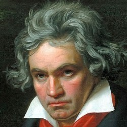
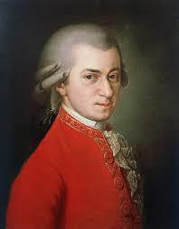
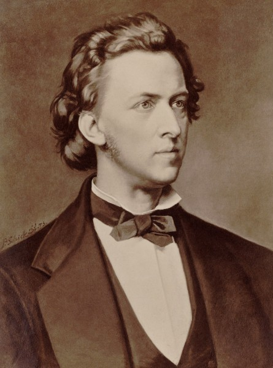
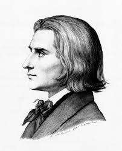

<div class="composer-grid">
    <!-- 貝多芬 -->
    <div class="composer-card">
        <a href="https://www.youtube.com/results?search_query=beethoven+classical+music" target="_blank">
            
        </a>
        <h2>貝多芬</h2>
        <p>貝多芬是德國作曲家，經常被視為浪漫主義音樂的橋樑。</p>
        <button class="quiz-btn" onclick="startQuiz('beethoven')">測試你的貝多芬知識</button>
    </div>

    <!-- 莫札特 -->
    <div class="composer-card">
        <a href="https://www.youtube.com/results?search_query=mozart+classical+music" target="_blank">
            
        </a>
        <h2>莫札特</h2>
        <p>莫札特是奧地利作曲家，以其旋律和創意聞名於世。</p>
        <button class="quiz-btn" onclick="startQuiz('mozart')">測試你的莫札特知識</button>
    </div>

    <!-- 蕭邦 -->
    <div class="composer-card">
        <a href="https://www.youtube.com/results?search_query=chopin+classical+music" target="_blank">
            
        </a>
        <h2>蕭邦</h2>
        <p>蕭邦是波蘭作曲家，以鋼琴作品的精湛技藝著稱。</p>
        <button class="quiz-btn" onclick="startQuiz('chopin')">測試你的蕭邦知識</button>
    </div>

    <!-- 李斯特 -->
    <div class="composer-card">
        <a href="https://www.youtube.com/results?search_query=liszt+classical+music" target="_blank">
            
        </a>
        <h2>李斯特</h2>
        <p>李斯特是匈牙利作曲家，被認為是鋼琴史上的一位天才。</p>
        <button class="quiz-btn" onclick="startQuiz('liszt')">測試你的李斯特知識</button>
    </div>
</div>
